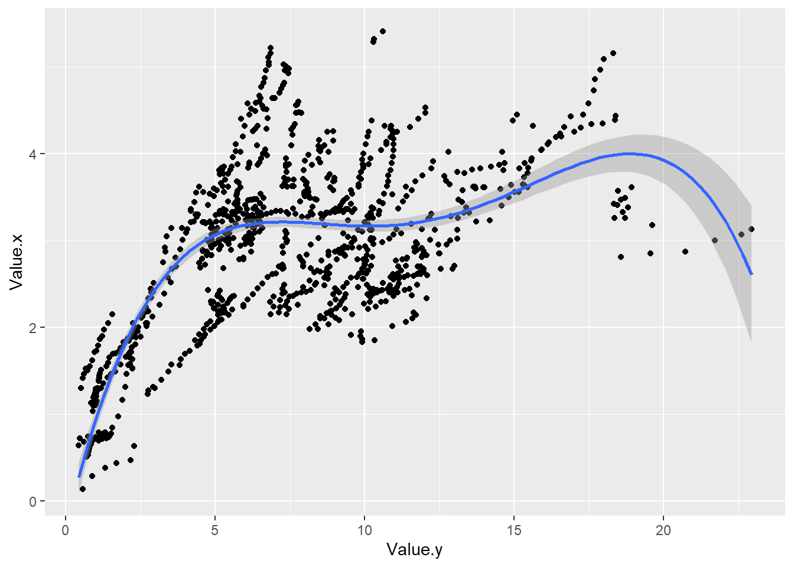
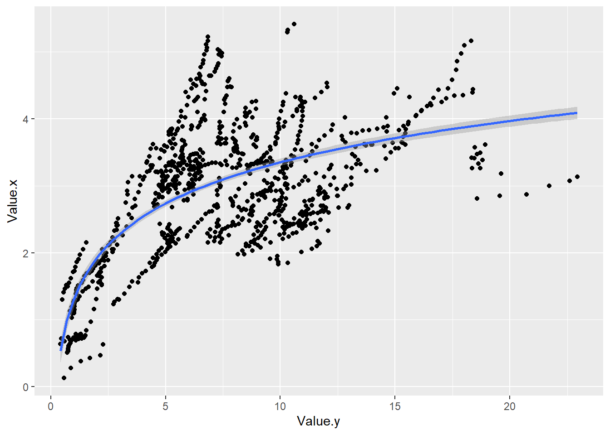
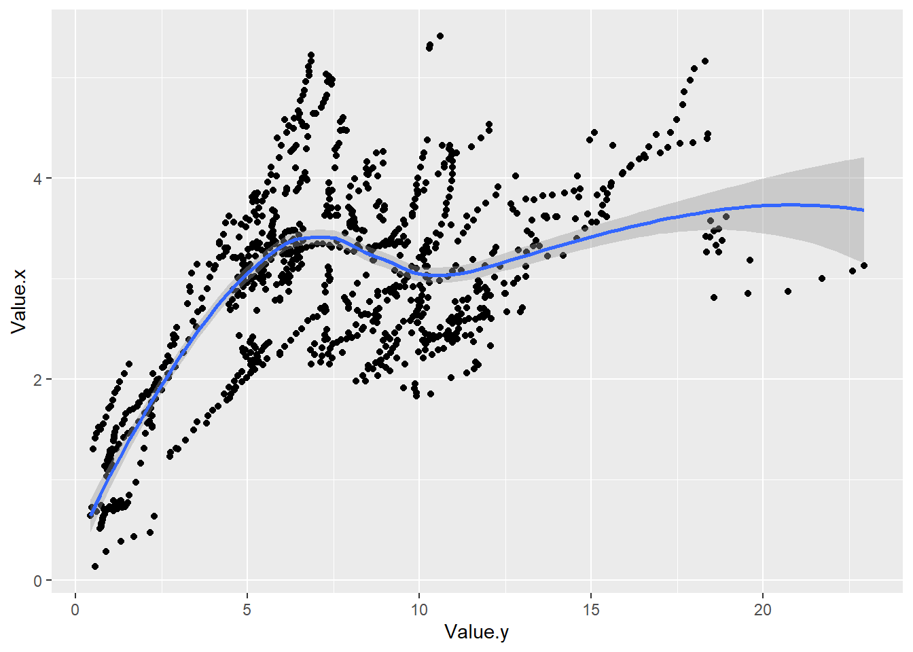

Η γραμμική παλινδρόμηση (βλ. ενότητες Γραμμική παλινδρόμηση και Ποσοστημοριακή παλινδρόμηση) μάς παρέχουν απλές εκφράσεις, αλλά όχι τις καλύτερες δυνατές προσεγγίσεις, όπως είδαμε. Μία λελογισμένη έκπτωση στην απλότητα, ώστε ν’ αυξηθεί η ακρίβεια, μπορούμε να πετύχουμε ψάχνοντας μια πολυωνυμική έκφραση της μίας μεταβλητής συναρτήσει της άλλης.
Εδώ, όπως και στις προαναφερθείσες ενότητες, θα χρησιμοποιήσουμε δεδομένα του OECD για τον αριθμό των γιατρών και των νοσοκόμων ανά χίλιους κατοίκους. Αυτά, όπως είπαμε, αποθηκεύτηκαν στα αρχεία doctorsPer1000.csv και nurcesPer1000.csv και τα παρουσιάζουμε, αφού πρώτα διαγράψουμε ό,τι είχαμε αποθηκεύσει.
| LOCATION | INDICATOR | SUBJECT | MEASURE | FREQUENCY | TIME | Value | Flag.Codes |
|---|---|---|---|---|---|---|---|
| AUS | MEDICALDOC | TOT | 1000HAB | A | 1961 | 1.13 | NA |
| AUS | MEDICALDOC | TOT | 1000HAB | A | 1964 | 1.23 | NA |
| AUS | MEDICALDOC | TOT | 1000HAB | A | 1965 | 1.22 | NA |
| AUS | MEDICALDOC | TOT | 1000HAB | A | 1966 | 1.23 | NA |
| AUS | MEDICALDOC | TOT | 1000HAB | A | 1967 | 1.26 | NA |
| AUS | MEDICALDOC | TOT | 1000HAB | A | 1968 | 1.24 | NA |
| AUS | MEDICALDOC | TOT | 1000HAB | A | 1969 | 1.26 | NA |
| AUS | MEDICALDOC | TOT | 1000HAB | A | 1970 | 1.33 | NA |
| AUS | MEDICALDOC | TOT | 1000HAB | A | 1971 | 1.26 | NA |
| AUS | MEDICALDOC | TOT | 1000HAB | A | 1972 | 1.38 | NA |
| AUS | MEDICALDOC | TOT | 1000HAB | A | 1973 | 1.35 | NA |
| AUS | MEDICALDOC | TOT | 1000HAB | A | 1974 | 1.42 | NA |
| AUS | MEDICALDOC | TOT | 1000HAB | A | 1975 | 1.48 | NA |
| AUS | MEDICALDOC | TOT | 1000HAB | A | 1976 | 1.64 | NA |
| AUS | MEDICALDOC | TOT | 1000HAB | A | 1977 | 1.65 | NA |
| AUS | MEDICALDOC | TOT | 1000HAB | A | 1978 | 1.85 | NA |
| AUS | MEDICALDOC | TOT | 1000HAB | A | 1979 | 1.78 | NA |
| AUS | MEDICALDOC | TOT | 1000HAB | A | 1980 | 1.85 | NA |
| AUS | MEDICALDOC | TOT | 1000HAB | A | 1981 | 1.86 | NA |
| AUS | MEDICALDOC | TOT | 1000HAB | A | 1982 | 1.90 | NA |
| AUS | MEDICALDOC | TOT | 1000HAB | A | 1983 | 1.95 | NA |
| AUS | MEDICALDOC | TOT | 1000HAB | A | 1984 | 1.83 | B |
| AUS | MEDICALDOC | TOT | 1000HAB | A | 1985 | 1.91 | NA |
| AUS | MEDICALDOC | TOT | 1000HAB | A | 1986 | 2.01 | NA |
| AUS | MEDICALDOC | TOT | 1000HAB | A | 1987 | 2.06 | NA |
| AUS | MEDICALDOC | TOT | 1000HAB | A | 1988 | 2.10 | NA |
| AUS | MEDICALDOC | TOT | 1000HAB | A | 1989 | 2.14 | NA |
| AUS | MEDICALDOC | TOT | 1000HAB | A | 1990 | 2.17 | NA |
| AUS | MEDICALDOC | TOT | 1000HAB | A | 1991 | 2.33 | B |
| AUS | MEDICALDOC | TOT | 1000HAB | A | 1992 | 2.37 | NA |
| AUS | MEDICALDOC | TOT | 1000HAB | A | 1993 | 2.40 | NA |
| AUS | MEDICALDOC | TOT | 1000HAB | A | 1994 | 2.44 | NA |
| AUS | MEDICALDOC | TOT | 1000HAB | A | 1995 | 2.48 | NA |
| AUS | MEDICALDOC | TOT | 1000HAB | A | 1996 | 2.40 | NA |
| AUS | MEDICALDOC | TOT | 1000HAB | A | 1997 | 2.40 | NA |
| AUS | MEDICALDOC | TOT | 1000HAB | A | 1998 | 2.40 | NA |
| AUS | MEDICALDOC | TOT | 1000HAB | A | 1999 | 2.45 | NA |
| AUS | MEDICALDOC | TOT | 1000HAB | A | 2000 | 2.49 | NA |
| AUS | MEDICALDOC | TOT | 1000HAB | A | 2001 | 2.56 | NA |
| AUS | MEDICALDOC | TOT | 1000HAB | A | 2002 | 2.56 | NA |
| AUS | MEDICALDOC | TOT | 1000HAB | A | 2003 | 2.63 | NA |
| AUS | MEDICALDOC | TOT | 1000HAB | A | 2004 | 2.71 | NA |
| AUS | MEDICALDOC | TOT | 1000HAB | A | 2005 | 2.78 | NA |
| AUS | MEDICALDOC | TOT | 1000HAB | A | 2006 | 2.84 | NA |
| AUS | MEDICALDOC | TOT | 1000HAB | A | 2007 | 3.01 | NA |
| AUS | MEDICALDOC | TOT | 1000HAB | A | 2008 | 3.02 | NA |
| AUS | MEDICALDOC | TOT | 1000HAB | A | 2009 | 3.12 | NA |
| AUS | MEDICALDOC | TOT | 1000HAB | A | 2011 | 3.32 | NA |
| AUS | MEDICALDOC | TOT | 1000HAB | A | 2012 | 3.31 | E |
| AUS | MEDICALDOC | TOT | 1000HAB | A | 2013 | 3.37 | NA |
| AUS | MEDICALDOC | TOT | 1000HAB | A | 2014 | 3.45 | E |
| AUS | MEDICALDOC | TOT | 1000HAB | A | 2015 | 3.51 | E |
| AUS | MEDICALDOC | TOT | 1000HAB | A | 2016 | 3.58 | E |
| AUS | MEDICALDOC | TOT | 1000HAB | A | 2017 | 3.68 | E |
| AUS | MEDICALDOC | TOT | 1000HAB | A | 2018 | 3.75 | E |
| AUS | MEDICALDOC | TOT | 1000HAB | A | 2019 | 3.83 | E |
| AUS | MEDICALDOC | TOT | 1000HAB | A | 2020 | 3.91 | E |
| AUS | MEDICALDOC | TOT | 1000HAB | A | 2021 | 4.02 | E |
| AUT | MEDICALDOC | TOT | 1000HAB | A | 1960 | 1.59 | NA |
| AUT | MEDICALDOC | TOT | 1000HAB | A | 1961 | 1.58 | NA |
| AUT | MEDICALDOC | TOT | 1000HAB | A | 1962 | 1.57 | NA |
| AUT | MEDICALDOC | TOT | 1000HAB | A | 1963 | 1.56 | NA |
| AUT | MEDICALDOC | TOT | 1000HAB | A | 1964 | 1.56 | NA |
| AUT | MEDICALDOC | TOT | 1000HAB | A | 1965 | 1.56 | NA |
| AUT | MEDICALDOC | TOT | 1000HAB | A | 1966 | 1.57 | NA |
| AUT | MEDICALDOC | TOT | 1000HAB | A | 1967 | 1.58 | NA |
| AUT | MEDICALDOC | TOT | 1000HAB | A | 1968 | 1.60 | NA |
| AUT | MEDICALDOC | TOT | 1000HAB | A | 1969 | 1.63 | NA |
| AUT | MEDICALDOC | TOT | 1000HAB | A | 1970 | 1.67 | NA |
| AUT | MEDICALDOC | TOT | 1000HAB | A | 1971 | 1.70 | NA |
| AUT | MEDICALDOC | TOT | 1000HAB | A | 1972 | 1.71 | NA |
| AUT | MEDICALDOC | TOT | 1000HAB | A | 1973 | 1.76 | NA |
| AUT | MEDICALDOC | TOT | 1000HAB | A | 1974 | 1.81 | NA |
| AUT | MEDICALDOC | TOT | 1000HAB | A | 1975 | 1.87 | NA |
| AUT | MEDICALDOC | TOT | 1000HAB | A | 1976 | 1.95 | NA |
| AUT | MEDICALDOC | TOT | 1000HAB | A | 1977 | 2.01 | NA |
| AUT | MEDICALDOC | TOT | 1000HAB | A | 1978 | 2.07 | NA |
| AUT | MEDICALDOC | TOT | 1000HAB | A | 1979 | 2.14 | NA |
| AUT | MEDICALDOC | TOT | 1000HAB | A | 1980 | 2.21 | NA |
| AUT | MEDICALDOC | TOT | 1000HAB | A | 1981 | 2.27 | NA |
| AUT | MEDICALDOC | TOT | 1000HAB | A | 1982 | 2.33 | NA |
| AUT | MEDICALDOC | TOT | 1000HAB | A | 1983 | 2.42 | NA |
| AUT | MEDICALDOC | TOT | 1000HAB | A | 1984 | 2.50 | NA |
| AUT | MEDICALDOC | TOT | 1000HAB | A | 1985 | 2.57 | NA |
| AUT | MEDICALDOC | TOT | 1000HAB | A | 1986 | 2.67 | NA |
| AUT | MEDICALDOC | TOT | 1000HAB | A | 1987 | 2.70 | NA |
| AUT | MEDICALDOC | TOT | 1000HAB | A | 1988 | 2.80 | NA |
| AUT | MEDICALDOC | TOT | 1000HAB | A | 1989 | 2.90 | NA |
| AUT | MEDICALDOC | TOT | 1000HAB | A | 1990 | 3.01 | NA |
| AUT | MEDICALDOC | TOT | 1000HAB | A | 1991 | 3.09 | NA |
| AUT | MEDICALDOC | TOT | 1000HAB | A | 1992 | 3.21 | NA |
| AUT | MEDICALDOC | TOT | 1000HAB | A | 1993 | 3.30 | NA |
| AUT | MEDICALDOC | TOT | 1000HAB | A | 1994 | 3.41 | NA |
| AUT | MEDICALDOC | TOT | 1000HAB | A | 1995 | 3.51 | NA |
| AUT | MEDICALDOC | TOT | 1000HAB | A | 1996 | 3.58 | NA |
| AUT | MEDICALDOC | TOT | 1000HAB | A | 1997 | 3.66 | NA |
| AUT | MEDICALDOC | TOT | 1000HAB | A | 1998 | 3.77 | NA |
| AUT | MEDICALDOC | TOT | 1000HAB | A | 1999 | 3.77 | NA |
| AUT | MEDICALDOC | TOT | 1000HAB | A | 2000 | 3.85 | NA |
| AUT | MEDICALDOC | TOT | 1000HAB | A | 2001 | 3.96 | NA |
| LOCATION | INDICATOR | SUBJECT | MEASURE | FREQUENCY | TIME | Value | Flag.Codes |
|---|---|---|---|---|---|---|---|
| AUS | NURSE | TOT | 1000HAB | A | 1980 | 10.33 | NA |
| AUS | NURSE | TOT | 1000HAB | A | 1981 | 9.91 | NA |
| AUS | NURSE | TOT | 1000HAB | A | 1982 | 9.85 | NA |
| AUS | NURSE | TOT | 1000HAB | A | 1983 | 9.87 | NA |
| AUS | NURSE | TOT | 1000HAB | A | 1984 | 9.91 | NA |
| AUS | NURSE | TOT | 1000HAB | A | 1985 | 9.55 | NA |
| AUS | NURSE | TOT | 1000HAB | A | 1986 | 10.92 | B |
| AUS | NURSE | TOT | 1000HAB | A | 1987 | 11.37 | NA |
| AUS | NURSE | TOT | 1000HAB | A | 1988 | 11.60 | NA |
| AUS | NURSE | TOT | 1000HAB | A | 1989 | 11.72 | NA |
| AUS | NURSE | TOT | 1000HAB | A | 1990 | 11.63 | NA |
| AUS | NURSE | TOT | 1000HAB | A | 1991 | 12.08 | NA |
| AUS | NURSE | TOT | 1000HAB | A | 1992 | 11.57 | NA |
| AUS | NURSE | TOT | 1000HAB | A | 1993 | 11.10 | B |
| AUS | NURSE | TOT | 1000HAB | A | 1994 | 11.50 | NA |
| AUS | NURSE | TOT | 1000HAB | A | 1995 | 10.84 | NA |
| AUS | NURSE | TOT | 1000HAB | A | 1996 | 10.83 | NA |
| AUS | NURSE | TOT | 1000HAB | A | 1997 | 10.41 | B |
| AUS | NURSE | TOT | 1000HAB | A | 1998 | 10.30 | NA |
| AUS | NURSE | TOT | 1000HAB | A | 1999 | 10.17 | NA |
| AUS | NURSE | TOT | 1000HAB | A | 2000 | 10.07 | NA |
| AUS | NURSE | TOT | 1000HAB | A | 2001 | 9.95 | NA |
| AUS | NURSE | TOT | 1000HAB | A | 2002 | 9.94 | NA |
| AUS | NURSE | TOT | 1000HAB | A | 2003 | 9.94 | NA |
| AUS | NURSE | TOT | 1000HAB | A | 2004 | 10.21 | NA |
| AUS | NURSE | TOT | 1000HAB | A | 2005 | 9.76 | NA |
| AUS | NURSE | TOT | 1000HAB | A | 2007 | 10.20 | NA |
| AUS | NURSE | TOT | 1000HAB | A | 2008 | 10.30 | NA |
| AUS | NURSE | TOT | 1000HAB | A | 2009 | 10.18 | NA |
| AUS | NURSE | TOT | 1000HAB | A | 2011 | 10.19 | NA |
| AUS | NURSE | TOT | 1000HAB | A | 2012 | 10.22 | E |
| AUS | NURSE | TOT | 1000HAB | A | 2013 | 11.12 | NA |
| AUS | NURSE | TOT | 1000HAB | A | 2014 | 11.28 | E |
| AUS | NURSE | TOT | 1000HAB | A | 2015 | 11.39 | E |
| AUS | NURSE | TOT | 1000HAB | A | 2016 | 11.57 | E |
| AUS | NURSE | TOT | 1000HAB | A | 2017 | 11.69 | E |
| AUS | NURSE | TOT | 1000HAB | A | 2018 | 11.93 | E |
| AUS | NURSE | TOT | 1000HAB | A | 2019 | 12.23 | E |
| AUS | NURSE | TOT | 1000HAB | A | 2020 | 12.28 | E |
| AUS | NURSE | TOT | 1000HAB | A | 2021 | 12.81 | E |
| AUT | NURSE | TOT | 1000HAB | A | 1985 | 3.41 | D |
| AUT | NURSE | TOT | 1000HAB | A | 1986 | 3.56 | D |
| AUT | NURSE | TOT | 1000HAB | A | 1987 | 3.69 | D |
| AUT | NURSE | TOT | 1000HAB | A | 1988 | 3.67 | D |
| AUT | NURSE | TOT | 1000HAB | A | 1989 | 3.82 | D |
| AUT | NURSE | TOT | 1000HAB | A | 1990 | 3.91 | D |
| AUT | NURSE | TOT | 1000HAB | A | 1991 | 4.02 | D |
| AUT | NURSE | TOT | 1000HAB | A | 1992 | 4.19 | D |
| AUT | NURSE | TOT | 1000HAB | A | 1993 | 4.43 | D |
| AUT | NURSE | TOT | 1000HAB | A | 1994 | 4.75 | D |
| AUT | NURSE | TOT | 1000HAB | A | 1995 | 4.95 | D |
| AUT | NURSE | TOT | 1000HAB | A | 1996 | 5.06 | D |
| AUT | NURSE | TOT | 1000HAB | A | 1997 | 5.19 | D |
| AUT | NURSE | TOT | 1000HAB | A | 1998 | 5.27 | D |
| AUT | NURSE | TOT | 1000HAB | A | 1999 | 5.42 | D |
| AUT | NURSE | TOT | 1000HAB | A | 2000 | 5.55 | D |
| AUT | NURSE | TOT | 1000HAB | A | 2001 | 5.58 | D |
| AUT | NURSE | TOT | 1000HAB | A | 2002 | 5.68 | D |
| AUT | NURSE | TOT | 1000HAB | A | 2003 | 5.68 | D |
| AUT | NURSE | TOT | 1000HAB | A | 2004 | 5.93 | D |
| AUT | NURSE | TOT | 1000HAB | A | 2005 | 5.99 | D |
| AUT | NURSE | TOT | 1000HAB | A | 2006 | 6.14 | D |
| AUT | NURSE | TOT | 1000HAB | A | 2007 | 6.21 | D |
| AUT | NURSE | TOT | 1000HAB | A | 2008 | 6.36 | D |
| AUT | NURSE | TOT | 1000HAB | A | 2009 | 6.47 | D |
| AUT | NURSE | TOT | 1000HAB | A | 2010 | 6.53 | D |
| AUT | NURSE | TOT | 1000HAB | A | 2011 | 6.62 | D |
| AUT | NURSE | TOT | 1000HAB | A | 2012 | 6.65 | D |
| AUT | NURSE | TOT | 1000HAB | A | 2013 | 6.69 | D |
| AUT | NURSE | TOT | 1000HAB | A | 2014 | 6.79 | D |
| AUT | NURSE | TOT | 1000HAB | A | 2015 | 6.80 | D |
| AUT | NURSE | TOT | 1000HAB | A | 2016 | 6.77 | D |
| AUT | NURSE | TOT | 1000HAB | A | 2017 | 6.85 | D |
| AUT | NURSE | TOT | 1000HAB | A | 2018 | 6.85 | D |
| AUT | NURSE | TOT | 1000HAB | A | 2019 | 10.30 | B |
| AUT | NURSE | TOT | 1000HAB | A | 2020 | 10.32 | NA |
| AUT | NURSE | TOT | 1000HAB | A | 2021 | 10.60 | NA |
| CAN | NURSE | TOT | 1000HAB | A | 2003 | 8.51 | NA |
| CAN | NURSE | TOT | 1000HAB | A | 2004 | 8.51 | NA |
| CAN | NURSE | TOT | 1000HAB | A | 2005 | 8.73 | NA |
| CAN | NURSE | TOT | 1000HAB | A | 2006 | 8.84 | NA |
| CAN | NURSE | TOT | 1000HAB | A | 2007 | 9.04 | NA |
| CAN | NURSE | TOT | 1000HAB | A | 2008 | 9.16 | NA |
| CAN | NURSE | TOT | 1000HAB | A | 2009 | 9.32 | NA |
| CAN | NURSE | TOT | 1000HAB | A | 2010 | 9.37 | NA |
| CAN | NURSE | TOT | 1000HAB | A | 2011 | 9.29 | NA |
| CAN | NURSE | TOT | 1000HAB | A | 2012 | 9.40 | NA |
| CAN | NURSE | TOT | 1000HAB | A | 2013 | 9.54 | NA |
| CAN | NURSE | TOT | 1000HAB | A | 2014 | 9.81 | NA |
| CAN | NURSE | TOT | 1000HAB | A | 2015 | 9.91 | NA |
| CAN | NURSE | TOT | 1000HAB | A | 2016 | 9.96 | NA |
| CAN | NURSE | TOT | 1000HAB | A | 2017 | 10.00 | NA |
| CAN | NURSE | TOT | 1000HAB | A | 2018 | 9.95 | NA |
| CAN | NURSE | TOT | 1000HAB | A | 2019 | 9.98 | NA |
| CAN | NURSE | TOT | 1000HAB | A | 2020 | 10.06 | NA |
| CAN | NURSE | TOT | 1000HAB | A | 2021 | 10.25 | NA |
| CZE | NURSE | TOT | 1000HAB | A | 1980 | 5.95 | NA |
| CZE | NURSE | TOT | 1000HAB | A | 1981 | 6.09 | NA |
| CZE | NURSE | TOT | 1000HAB | A | 1982 | 6.26 | NA |
| CZE | NURSE | TOT | 1000HAB | A | 1983 | 6.41 | NA |
Θέλουμε να δούμε αν μπορούμε να εκφράσουμε τους γιατρούς ως ένα πολυώνυμο τετάρτου βαθμού με μεταβλητή τις νοσοκόμες, να επιτύχουμε την πολυωνυμική παλινδρόμηση τετάρτου βαθμού. Δηλαδή να έχουμε κάτι τέτοιο:
\[[giatroi]=\alpha+\beta\cdot[nosok]+\gamma\cdot[nosok]^2+\delta\cdot[nosok]^3+\varepsilon\cdot[nosok]^4\]
Αρχικά αυτά ενοποιήθηκαν, κατά τα γνωστά (βλ. υποενότητα «Συγχώνευση πινάκων δίπλα-δίπλα» της Προσθήκη στοιχείων σε πίνακα), γράφοντας:
| LOCATION | TIME | INDICATOR.x | SUBJECT.x | MEASURE.x | FREQUENCY.x | Value.x | Flag.Codes.x | INDICATOR.y | SUBJECT.y | MEASURE.y | FREQUENCY.y | Value.y | Flag.Codes.y |
|---|---|---|---|---|---|---|---|---|---|---|---|---|---|
| AUS | 1980 | MEDICALDOC | TOT | 1000HAB | A | 1.85 | NA | NURSE | TOT | 1000HAB | A | 10.33 | NA |
| AUS | 1981 | MEDICALDOC | TOT | 1000HAB | A | 1.86 | NA | NURSE | TOT | 1000HAB | A | 9.91 | NA |
| AUS | 1982 | MEDICALDOC | TOT | 1000HAB | A | 1.90 | NA | NURSE | TOT | 1000HAB | A | 9.85 | NA |
| AUS | 1983 | MEDICALDOC | TOT | 1000HAB | A | 1.95 | NA | NURSE | TOT | 1000HAB | A | 9.87 | NA |
| AUS | 1984 | MEDICALDOC | TOT | 1000HAB | A | 1.83 | B | NURSE | TOT | 1000HAB | A | 9.91 | NA |
| AUS | 1985 | MEDICALDOC | TOT | 1000HAB | A | 1.91 | NA | NURSE | TOT | 1000HAB | A | 9.55 | NA |
| AUS | 1986 | MEDICALDOC | TOT | 1000HAB | A | 2.01 | NA | NURSE | TOT | 1000HAB | A | 10.92 | B |
| AUS | 1987 | MEDICALDOC | TOT | 1000HAB | A | 2.06 | NA | NURSE | TOT | 1000HAB | A | 11.37 | NA |
| AUS | 1988 | MEDICALDOC | TOT | 1000HAB | A | 2.10 | NA | NURSE | TOT | 1000HAB | A | 11.60 | NA |
| AUS | 1989 | MEDICALDOC | TOT | 1000HAB | A | 2.14 | NA | NURSE | TOT | 1000HAB | A | 11.72 | NA |
| AUS | 1990 | MEDICALDOC | TOT | 1000HAB | A | 2.17 | NA | NURSE | TOT | 1000HAB | A | 11.63 | NA |
| AUS | 1991 | MEDICALDOC | TOT | 1000HAB | A | 2.33 | B | NURSE | TOT | 1000HAB | A | 12.08 | NA |
| AUS | 1992 | MEDICALDOC | TOT | 1000HAB | A | 2.37 | NA | NURSE | TOT | 1000HAB | A | 11.57 | NA |
| AUS | 1993 | MEDICALDOC | TOT | 1000HAB | A | 2.40 | NA | NURSE | TOT | 1000HAB | A | 11.10 | B |
| AUS | 1994 | MEDICALDOC | TOT | 1000HAB | A | 2.44 | NA | NURSE | TOT | 1000HAB | A | 11.50 | NA |
| AUS | 1995 | MEDICALDOC | TOT | 1000HAB | A | 2.48 | NA | NURSE | TOT | 1000HAB | A | 10.84 | NA |
| AUS | 1996 | MEDICALDOC | TOT | 1000HAB | A | 2.40 | NA | NURSE | TOT | 1000HAB | A | 10.83 | NA |
| AUS | 1997 | MEDICALDOC | TOT | 1000HAB | A | 2.40 | NA | NURSE | TOT | 1000HAB | A | 10.41 | B |
| AUS | 1998 | MEDICALDOC | TOT | 1000HAB | A | 2.40 | NA | NURSE | TOT | 1000HAB | A | 10.30 | NA |
| AUS | 1999 | MEDICALDOC | TOT | 1000HAB | A | 2.45 | NA | NURSE | TOT | 1000HAB | A | 10.17 | NA |
| AUS | 2000 | MEDICALDOC | TOT | 1000HAB | A | 2.49 | NA | NURSE | TOT | 1000HAB | A | 10.07 | NA |
| AUS | 2001 | MEDICALDOC | TOT | 1000HAB | A | 2.56 | NA | NURSE | TOT | 1000HAB | A | 9.95 | NA |
| AUS | 2002 | MEDICALDOC | TOT | 1000HAB | A | 2.56 | NA | NURSE | TOT | 1000HAB | A | 9.94 | NA |
| AUS | 2003 | MEDICALDOC | TOT | 1000HAB | A | 2.63 | NA | NURSE | TOT | 1000HAB | A | 9.94 | NA |
| AUS | 2004 | MEDICALDOC | TOT | 1000HAB | A | 2.71 | NA | NURSE | TOT | 1000HAB | A | 10.21 | NA |
| AUS | 2005 | MEDICALDOC | TOT | 1000HAB | A | 2.78 | NA | NURSE | TOT | 1000HAB | A | 9.76 | NA |
| AUS | 2007 | MEDICALDOC | TOT | 1000HAB | A | 3.01 | NA | NURSE | TOT | 1000HAB | A | 10.20 | NA |
| AUS | 2008 | MEDICALDOC | TOT | 1000HAB | A | 3.02 | NA | NURSE | TOT | 1000HAB | A | 10.30 | NA |
| AUS | 2009 | MEDICALDOC | TOT | 1000HAB | A | 3.12 | NA | NURSE | TOT | 1000HAB | A | 10.18 | NA |
| AUS | 2011 | MEDICALDOC | TOT | 1000HAB | A | 3.32 | NA | NURSE | TOT | 1000HAB | A | 10.19 | NA |
| AUS | 2012 | MEDICALDOC | TOT | 1000HAB | A | 3.31 | E | NURSE | TOT | 1000HAB | A | 10.22 | E |
| AUS | 2013 | MEDICALDOC | TOT | 1000HAB | A | 3.37 | NA | NURSE | TOT | 1000HAB | A | 11.12 | NA |
| AUS | 2014 | MEDICALDOC | TOT | 1000HAB | A | 3.45 | E | NURSE | TOT | 1000HAB | A | 11.28 | E |
| AUS | 2015 | MEDICALDOC | TOT | 1000HAB | A | 3.51 | E | NURSE | TOT | 1000HAB | A | 11.39 | E |
| AUS | 2016 | MEDICALDOC | TOT | 1000HAB | A | 3.58 | E | NURSE | TOT | 1000HAB | A | 11.57 | E |
| AUS | 2017 | MEDICALDOC | TOT | 1000HAB | A | 3.68 | E | NURSE | TOT | 1000HAB | A | 11.69 | E |
| AUS | 2018 | MEDICALDOC | TOT | 1000HAB | A | 3.75 | E | NURSE | TOT | 1000HAB | A | 11.93 | E |
| AUS | 2019 | MEDICALDOC | TOT | 1000HAB | A | 3.83 | E | NURSE | TOT | 1000HAB | A | 12.23 | E |
| AUS | 2020 | MEDICALDOC | TOT | 1000HAB | A | 3.91 | E | NURSE | TOT | 1000HAB | A | 12.28 | E |
| AUS | 2021 | MEDICALDOC | TOT | 1000HAB | A | 4.02 | E | NURSE | TOT | 1000HAB | A | 12.81 | E |
| AUT | 1985 | MEDICALDOC | TOT | 1000HAB | A | 2.57 | NA | NURSE | TOT | 1000HAB | A | 3.41 | D |
| AUT | 1986 | MEDICALDOC | TOT | 1000HAB | A | 2.67 | NA | NURSE | TOT | 1000HAB | A | 3.56 | D |
| AUT | 1987 | MEDICALDOC | TOT | 1000HAB | A | 2.70 | NA | NURSE | TOT | 1000HAB | A | 3.69 | D |
| AUT | 1988 | MEDICALDOC | TOT | 1000HAB | A | 2.80 | NA | NURSE | TOT | 1000HAB | A | 3.67 | D |
| AUT | 1989 | MEDICALDOC | TOT | 1000HAB | A | 2.90 | NA | NURSE | TOT | 1000HAB | A | 3.82 | D |
| AUT | 1990 | MEDICALDOC | TOT | 1000HAB | A | 3.01 | NA | NURSE | TOT | 1000HAB | A | 3.91 | D |
| AUT | 1991 | MEDICALDOC | TOT | 1000HAB | A | 3.09 | NA | NURSE | TOT | 1000HAB | A | 4.02 | D |
| AUT | 1992 | MEDICALDOC | TOT | 1000HAB | A | 3.21 | NA | NURSE | TOT | 1000HAB | A | 4.19 | D |
| AUT | 1993 | MEDICALDOC | TOT | 1000HAB | A | 3.30 | NA | NURSE | TOT | 1000HAB | A | 4.43 | D |
| AUT | 1994 | MEDICALDOC | TOT | 1000HAB | A | 3.41 | NA | NURSE | TOT | 1000HAB | A | 4.75 | D |
| AUT | 1995 | MEDICALDOC | TOT | 1000HAB | A | 3.51 | NA | NURSE | TOT | 1000HAB | A | 4.95 | D |
| AUT | 1996 | MEDICALDOC | TOT | 1000HAB | A | 3.58 | NA | NURSE | TOT | 1000HAB | A | 5.06 | D |
| AUT | 1997 | MEDICALDOC | TOT | 1000HAB | A | 3.66 | NA | NURSE | TOT | 1000HAB | A | 5.19 | D |
| AUT | 1998 | MEDICALDOC | TOT | 1000HAB | A | 3.77 | NA | NURSE | TOT | 1000HAB | A | 5.27 | D |
| AUT | 1999 | MEDICALDOC | TOT | 1000HAB | A | 3.77 | NA | NURSE | TOT | 1000HAB | A | 5.42 | D |
| AUT | 2000 | MEDICALDOC | TOT | 1000HAB | A | 3.85 | NA | NURSE | TOT | 1000HAB | A | 5.55 | D |
| AUT | 2001 | MEDICALDOC | TOT | 1000HAB | A | 3.96 | NA | NURSE | TOT | 1000HAB | A | 5.58 | D |
| AUT | 2002 | MEDICALDOC | TOT | 1000HAB | A | 4.03 | NA | NURSE | TOT | 1000HAB | A | 5.68 | D |
| AUT | 2003 | MEDICALDOC | TOT | 1000HAB | A | 4.11 | NA | NURSE | TOT | 1000HAB | A | 5.68 | D |
| AUT | 2004 | MEDICALDOC | TOT | 1000HAB | A | 4.20 | NA | NURSE | TOT | 1000HAB | A | 5.93 | D |
| AUT | 2005 | MEDICALDOC | TOT | 1000HAB | A | 4.32 | NA | NURSE | TOT | 1000HAB | A | 5.99 | D |
| AUT | 2006 | MEDICALDOC | TOT | 1000HAB | A | 4.45 | NA | NURSE | TOT | 1000HAB | A | 6.14 | D |
| AUT | 2007 | MEDICALDOC | TOT | 1000HAB | A | 4.52 | B | NURSE | TOT | 1000HAB | A | 6.21 | D |
| AUT | 2008 | MEDICALDOC | TOT | 1000HAB | A | 4.59 | NA | NURSE | TOT | 1000HAB | A | 6.36 | D |
| AUT | 2009 | MEDICALDOC | TOT | 1000HAB | A | 4.67 | NA | NURSE | TOT | 1000HAB | A | 6.47 | D |
| AUT | 2010 | MEDICALDOC | TOT | 1000HAB | A | 4.77 | NA | NURSE | TOT | 1000HAB | A | 6.53 | D |
| AUT | 2011 | MEDICALDOC | TOT | 1000HAB | A | 4.82 | NA | NURSE | TOT | 1000HAB | A | 6.62 | D |
| AUT | 2012 | MEDICALDOC | TOT | 1000HAB | A | 4.87 | NA | NURSE | TOT | 1000HAB | A | 6.65 | D |
| AUT | 2013 | MEDICALDOC | TOT | 1000HAB | A | 4.96 | B | NURSE | TOT | 1000HAB | A | 6.69 | D |
| AUT | 2014 | MEDICALDOC | TOT | 1000HAB | A | 5.02 | NA | NURSE | TOT | 1000HAB | A | 6.79 | D |
| AUT | 2015 | MEDICALDOC | TOT | 1000HAB | A | 5.06 | NA | NURSE | TOT | 1000HAB | A | 6.80 | D |
| AUT | 2016 | MEDICALDOC | TOT | 1000HAB | A | 5.11 | NA | NURSE | TOT | 1000HAB | A | 6.77 | D |
| AUT | 2017 | MEDICALDOC | TOT | 1000HAB | A | 5.16 | NA | NURSE | TOT | 1000HAB | A | 6.85 | D |
| AUT | 2018 | MEDICALDOC | TOT | 1000HAB | A | 5.22 | NA | NURSE | TOT | 1000HAB | A | 6.85 | D |
| AUT | 2019 | MEDICALDOC | TOT | 1000HAB | A | 5.29 | NA | NURSE | TOT | 1000HAB | A | 10.30 | B |
| AUT | 2020 | MEDICALDOC | TOT | 1000HAB | A | 5.32 | NA | NURSE | TOT | 1000HAB | A | 10.32 | NA |
| AUT | 2021 | MEDICALDOC | TOT | 1000HAB | A | 5.41 | NA | NURSE | TOT | 1000HAB | A | 10.60 | NA |
| BEL | 2004 | MEDICALDOC | TOT | 1000HAB | A | 2.87 | NA | NURSE | TOT | 1000HAB | A | 8.79 | E |
| BEL | 2005 | MEDICALDOC | TOT | 1000HAB | A | 2.87 | NA | NURSE | TOT | 1000HAB | A | 9.01 | E |
| BEL | 2006 | MEDICALDOC | TOT | 1000HAB | A | 2.89 | NA | NURSE | TOT | 1000HAB | A | 9.12 | E |
| BEL | 2007 | MEDICALDOC | TOT | 1000HAB | A | 2.91 | NA | NURSE | TOT | 1000HAB | A | 9.24 | E |
| BEL | 2008 | MEDICALDOC | TOT | 1000HAB | A | 2.92 | NA | NURSE | TOT | 1000HAB | A | 9.32 | E |
| BEL | 2009 | MEDICALDOC | TOT | 1000HAB | A | 2.92 | NA | NURSE | TOT | 1000HAB | A | 9.42 | NA |
| BEL | 2010 | MEDICALDOC | TOT | 1000HAB | A | 2.92 | NA | NURSE | TOT | 1000HAB | A | 9.59 | E |
| BEL | 2011 | MEDICALDOC | TOT | 1000HAB | A | 2.92 | NA | NURSE | TOT | 1000HAB | A | 9.81 | E |
| BEL | 2012 | MEDICALDOC | TOT | 1000HAB | A | 2.93 | NA | NURSE | TOT | 1000HAB | A | 10.02 | E |
| BEL | 2013 | MEDICALDOC | TOT | 1000HAB | A | 2.96 | NA | NURSE | TOT | 1000HAB | A | 10.30 | E |
| BEL | 2014 | MEDICALDOC | TOT | 1000HAB | A | 2.98 | NA | NURSE | TOT | 1000HAB | A | 10.58 | E |
| BEL | 2015 | MEDICALDOC | TOT | 1000HAB | A | 3.02 | NA | NURSE | TOT | 1000HAB | A | 10.83 | E |
| BEL | 2016 | MEDICALDOC | TOT | 1000HAB | A | 3.07 | NA | NURSE | TOT | 1000HAB | A | 10.96 | B |
| BEL | 2017 | MEDICALDOC | TOT | 1000HAB | A | 3.08 | NA | NURSE | TOT | 1000HAB | A | 11.22 | NA |
| BEL | 2018 | MEDICALDOC | TOT | 1000HAB | A | 3.13 | NA | NURSE | TOT | 1000HAB | A | 11.07 | NA |
| BRA | 2007 | MEDICALDOC | TOT | 1000HAB | A | 1.30 | NA | NURSE | TOT | 1000HAB | A | 0.50 | NA |
| BRA | 2008 | MEDICALDOC | TOT | 1000HAB | A | 1.41 | NA | NURSE | TOT | 1000HAB | A | 0.56 | NA |
| BRA | 2009 | MEDICALDOC | TOT | 1000HAB | A | 1.46 | NA | NURSE | TOT | 1000HAB | A | 0.61 | NA |
| BRA | 2010 | MEDICALDOC | TOT | 1000HAB | A | 1.52 | NA | NURSE | TOT | 1000HAB | A | 0.67 | NA |
| BRA | 2011 | MEDICALDOC | TOT | 1000HAB | A | 1.50 | NA | NURSE | TOT | 1000HAB | A | 0.73 | NA |
| BRA | 2012 | MEDICALDOC | TOT | 1000HAB | A | 1.55 | NA | NURSE | TOT | 1000HAB | A | 0.80 | NA |
| BRA | 2013 | MEDICALDOC | TOT | 1000HAB | A | 1.62 | NA | NURSE | TOT | 1000HAB | A | 0.88 | NA |
| BRA | 2014 | MEDICALDOC | TOT | 1000HAB | A | 1.71 | NA | NURSE | TOT | 1000HAB | A | 0.97 | NA |
και ακολούθως ορίζουμε:
Για να βρούμε τους αριθμούς \(\alpha\), \(\beta\), \(\gamma\), \(\delta\) και \(\varepsilon\) γράφουμε:
##
## Call:
## lm(formula = giatroi ~ nosok + I(nosok^2) + I(nosok^3) + I(nosok^4))
##
## Coefficients:
## (Intercept) nosok I(nosok^2) I(nosok^3) I(nosok^4)
## -0.298571 1.430165 -0.207341 0.012481 -0.000258Όπερ σημαίνει ότι:
\(\alpha=-0.298571\)
\(\beta=1.430165\)
\(\gamma=-0.207341\)
\(\delta=0.012481\)
\(\varepsilon=-0.000258\)
Επομένως:
\[[giatroi]=-0.298571+1.430165\cdot[nosok]-0.207341\cdot[nosok]^2+0.012481\cdot[nosok]^3-0.000258\cdot[nosok]^4\]
Αν δοκιμάσουμε τώρα να δούμε των πρόβλεψη του αριθμού των γιατρών, στην περίπτωση που έχουμε 2.23 νοσοκόμους ανά χίλιους κατοίκους, τότε έχουμε:
\[-0.298571+1.430165\cdot2.23-0.207341\cdot2.23^2+0.012481\cdot2.23^3-0.000258\cdot2.23^4=1.9916\]
Δηλαδή περίπου 2 γιατρούς ανά χίλιους κατοίκους.
Για να σχεδιάσουμε την πολυωνυμική παλινδρόμηση θα χρειαστούμε πάλι
το πακέτο ggplot2, οπότε γράφουμε:
και ακολούθως:
DocNurcPl <- ggplot(DocNurc, aes(x = Value.y, y = Value.x))
DocNurcPl + geom_point() + geom_smooth(method = lm, formula = y ~ x+I(x^2)+I(x^3)+I(x^4))
Στα παραπάνω θελήσαμε να βρούμε ένα πολυώνυμο 4ου βαθμού που να παρεμβάλλεται μεταξύ των πραγματικών τιμών. Φυσικά στη θέση του πολυωνύμου θα μπορούσαμε να διαλέξουμε οποιαδήποτε άλλη συνάρτηση. Θα μπορούσαμε πχ να θέλουμε κάτι τέτοιο:
\[[giatroi]=\alpha+\beta\cdot\log([nosok])\]
Τοιαύτη περιπτώσει θα μπορούσαμε να γράψουμε:
##
## Call:
## lm(formula = giatroi ~ I(log(nosok)))
##
## Coefficients:
## (Intercept) I(log(nosok))
## 1.3053 0.8884Από την παραπάνω απάντηση συμπεραίνουμε:
\(\alpha=1.3053\)
\(\beta=0.8884\) Επομένως:
\[[giatroi]=1.3053+0.8884\cdot\log([nosok])\]
Τέλος, σχεδιάζουμε την εν λόγω καμπύλη γράφοντας:

Είδαμε ότι είναι πολύ χρήσιμο να έχουμε μια καμπύλη που να προσεγγίζει καλά τα σημεία του διαγράμματος διασποράς. Είδαμε επίσης ότι όσο περισσότερο ρίχνουμε τις προσδοκίες μας όσον αφορά την απλότητα του τύπου της καμπύλης, τόσο περισσότερο μπορούμε να κερδίζουμε μια καμπύλη που να αναπαριστά πιστότερα τα σημεία του διαγράμματος διασποράς. Αν ρίξουμε εντελώς τις προσδοκίες μας, ως προς τον διαθέσιμο τύπο της καμπύλης, τότε έχουμε μια ακόμα πιστότερη καμπύλη, την τοπική παλινδρόμηση.
Για να σχεδιάσουμε την τοπική παλινδρόμηση θα χρειαστούμε πάλι το πακέτο ggplot2, οπότε γράφουμε:
## `geom_smooth()` using method = 'loess' and formula = 'y ~ x'
Εν προκειμένω δεν έχουμε συγκεκριμένο τύπο για την καμπύλη αυτή. Φυσικά, έχουμε κάθε δικαίωμα να υποψιαστούμε τη μορφή της συνάρτησης και μετά να χρησιμοποιήσουμε όσα μάθαμε στην ενότητα Πολυωνυμική και άλλων συναρτήσεων παλινδρόμηση.
Συνολικά γράψαμε τον κώδικα αυτόν:
rm(list = ls())
DocNurc <- merge(doctorsPer1000,nurcesPer1000,by=c("LOCATION","TIME"))
giatroi <- DocNurc$Value.x
nosok <- DocNurc$Value.y
lm(giatroi ~ nosok + I(nosok^2) + I(nosok^3)+I(nosok^4))
if(!require(ggplot2)){
install.packages("ggplot2")
library(ggplot2)
}
DocNurcPl <- ggplot(DocNurc, aes(x = Value.y, y = Value.x))
DocNurcPl + geom_point() + geom_smooth(method = lm, formula = y ~ x+I(x^2)+I(x^3)+I(x^4))
lm(giatroi ~ I(log(nosok)))
DocNurcPl + geom_point() + geom_smooth(method = lm, formula = y ~ I(log(x)))
DocNurcPl + geom_point() + geom_smooth()